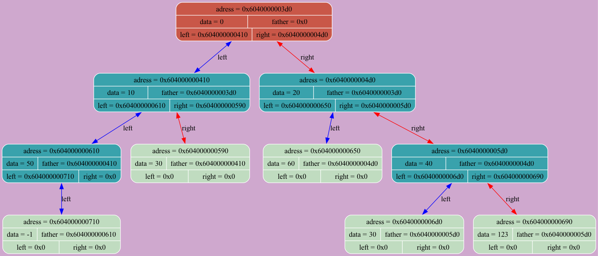
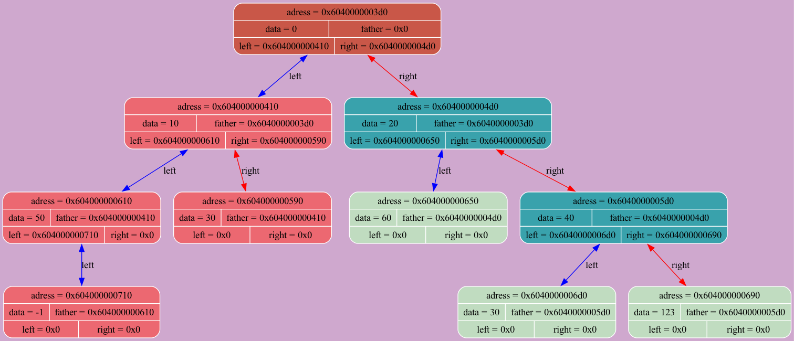
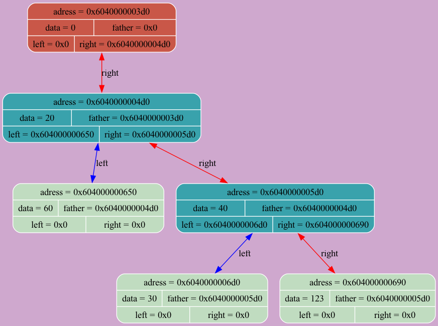

BEFORE INSERT 123
tree [0x6020000000d0]: size = 7 IMAGE -----------------------------------END-TreeDump------------------------
-----------------------------------END-TreeDump------------------------
DUMP NUMBER 1 -----------------------------------TreeDump------------------------BEFORE INSERT 123
tree [0x6020000000d0]: size = 7 IMAGE
DUMP NUMBER 2 -----------------------------------TreeDump------------------------AFTER INSERT 123
tree [0x6020000000d0]: size = 8 IMAGE-----------------------------------END-TreeDump------------------------
DUMP NUMBER 3 -----------------------------------TreeDump------------------------BEFORE INSERT 30
tree [0x6020000000d0]: size = 8 IMAGE-----------------------------------END-TreeDump------------------------
DUMP NUMBER 4 -----------------------------------TreeDump------------------------AFTER INSERT 30
tree [0x6020000000d0]: size = 9 IMAGE-----------------------------------END-TreeDump------------------------
DUMP NUMBER 5 -----------------------------------TreeDump------------------------BEFORE INSERT -1
tree [0x6020000000d0]: size = 9 IMAGE-----------------------------------END-TreeDump------------------------
DUMP NUMBER 6 -----------------------------------TreeDump------------------------AFTER INSERT -1
tree [0x6020000000d0]: size = 10 IMAGE  -----------------------------------END-TreeDump------------------------
DUMP NUMBER 7 -----------------------------------TreeDump------------------------BEFORE DELETE 10
tree [0x6020000000d0]: size = 10 IMAGE  -----------------------------------END-TreeDump------------------------
DUMP NUMBER 8 -----------------------------------TreeDump------------------------AFTER DELETE 10
tree [0x6020000000d0]: size = 10 IMAGE  -----------------------------------END-TreeDump------------------------
DUMP NUMBER 9 -----------------------------------TreeDump------------------------ERROR 0
tree [0x6020000000d0]: size = 10 IMAGE-----------------------------------END-TreeDump------------------------